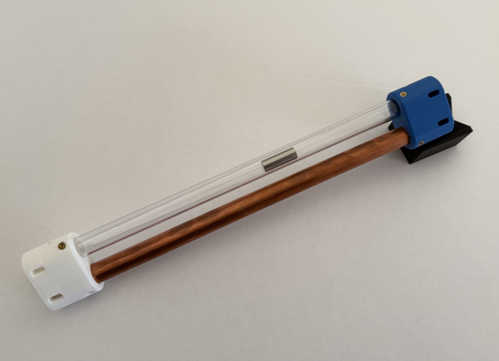
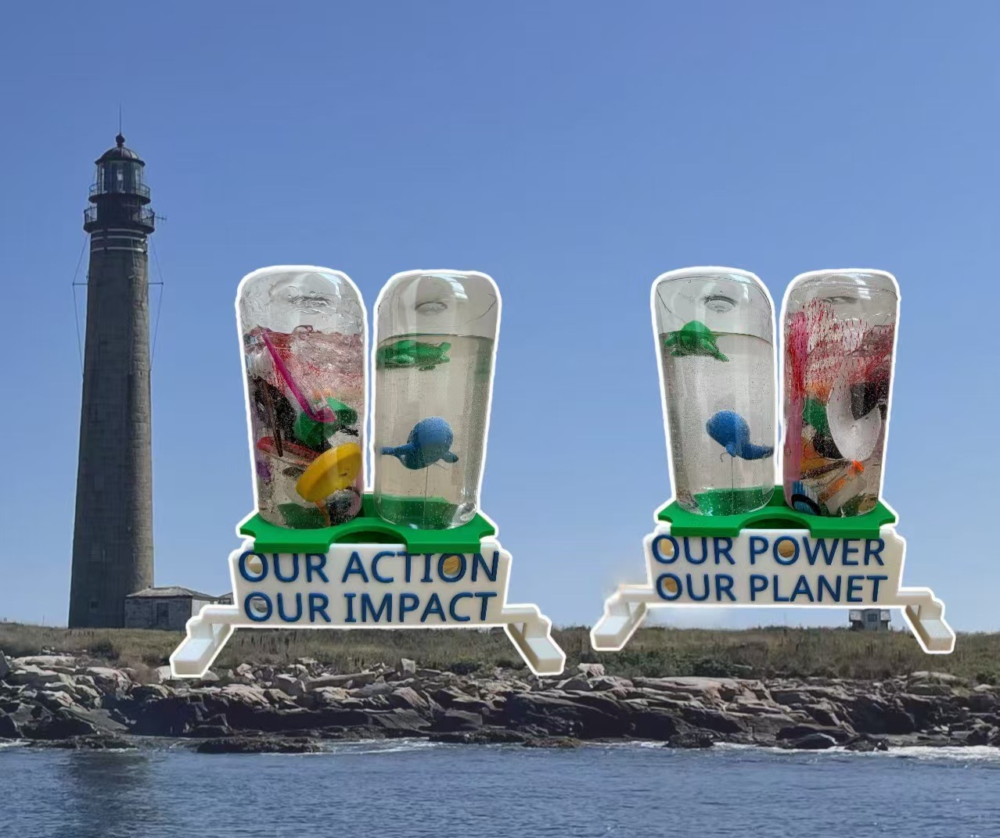

Open hardware · STEM · Student-Led
Democratizing Tangible Engineering.
Open Apparatus provides open-source, 3D-printable hardware and hands-on workshops to empower the next generation of builders and engineers.

Mission
Bridging the Gap Between Theory and Reality
We believe that modernized STEM education should not be locked behind massive commercial school budgets. While advanced theoretical math and physics are critical, most young students have never seen a 3D printer in action or held a physical engineering prototype.
Born in Massachusetts classrooms and rapidly expanding to a national student network, Open Apparatus is changing that. We take complex, university-level concepts and engineer them into rugged, open-source educational tools that any community can build, iterate, and learn from.
Meet the Founder
Built by a Student, For the Next Generation
Through my research in higher mathematics and preparation for theoretical exams like the F=ma physics competition, I realized that true intuition cannot be learned on a whiteboard alone. Whether visualizing abstract geometry or studying applied mechatronics, the stark contrast between pure theory and tangible reality became obvious to me.
To bridge this gap, I began using advanced CAD to engineer physical models, including our flagship Lenz's Law Demonstrator. Shortly after, I piloted a hands-on 3D printing workshop for local 4th graders. Witnessing their immediate engagement with physical manufacturing is what ultimately inspired me to found Open Apparatus. My mission is to give more students access to the exact same rapid-prototyping tools utilized in modern hardware development.
Hardware
Classroom-ready, community-owned
Download CAD, print locally, and run the same workshops we pilot in schools—rugged parts, clear assembly, and curriculum aligned with real engineering practice.
-
01
Open-source files
STL, STEP, and documentation you can fork and improve.
-
02
3D-printable builds
Designed for common FDM printers and classroom wear.
-
03
Workshops
Hands-on sessions that connect theory to the bench.
Featured Project: Earth Day 3D Sculptures

Built using our upcoming open-source CAD files, the sculptures visually contrast the impact of plastic pollution with a healthy ocean ecosystem.
Our Educational Philosophy
Open Apparatus is built to be a catalyst, not a replacement. Our open-source hardware is strictly auxiliary—designed to seamlessly supplement formal classroom instruction, collegiate coursework, and professional training. We exist to empower educators with tangible tools that bridge the gap between abstract textbook theory and physical engineering reality.